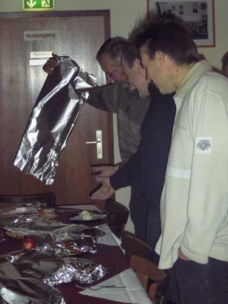
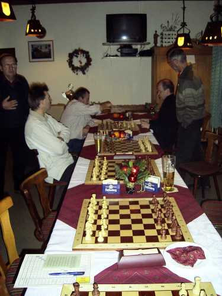
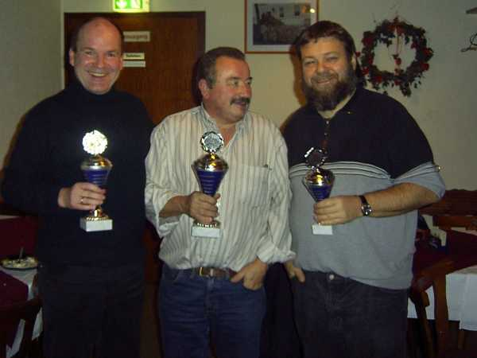

12.12.06
Ehrungen Sommerpokal
und
Nikolausblitzturnier

Die Spannung steigt: Was ist unter der Alufolie versteckt?

Unser 1. Vorstand lüftet das Geheimnis.

Lecker, lecker...

Bernhard mit dem Wanderpokal.

Die Sieger des Sommerpokalturniers 2006 (von links):
Wolfgang (3.), Bernhard
(1.), Bahni (2.)

Nun wird's ernst: Das Nikolausblitzturnier beginnt.

Die Sieger (hier mit "geliehenen" Pokalen) von links:
Bernhard (2.), Elmar (1.), Bahni (3.)